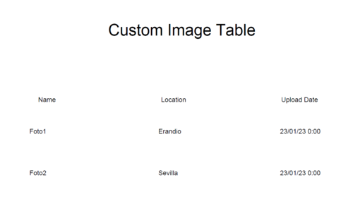

Esta ventana permite realizar las operaciones de mantenimiento básico de los datos de contenido. El usuario podrá mediante los controles de los que dispone la ventana crear, modificar y eliminar los contenidos de la aplicación. Así mismo podrá generar un informe que contiene un listado de los contenidos con sus correspondientes datos.
Para crear un contenido deberá introducir el tipo de contenido deseado, ya sea CustomImage o Custom Text. Una vez seleccionado se le habilitaran los campos genericos de Name, Upload Date y Localization. Dependiendo del tipo de contenido seleccionado se habilitara el campo Description o el boton Choose File. Una vez realizadas las acciones anteriores, deberá pulsar el botón Create Content para crear el contenido. Si no se produce ningún error, se creará el contenido y aparecerá en la tabla de contenido correspondiente al tipo añadido.
Modificar datos de un contenidoPara modificar los datos de un contenido primero deberá seleccionar el contenido haciendo click en fila deseada de la tabla de contenido (Cualquiera de las dos). Los campos de entrada de la ventana se informarán con los datos del contenido seleccionado. Dichos campos se pueden utilizar para modificar los datos del contenido. Una vez realizadas las acciones anteriores, deberá pulsar el botón Modify Content para finalizar la operación. Si no se produce ningún error, se modificarán los datos del contenido y los datos actualizados del contenido aparecerán en la tabla de contenidos que se muestra en la ventana.
Eliminar contenidoPara eliminar un contenido deberá seleccionar el contenido a borrar haciendo click en fila deseada de la tabla de contenido. A continuación, pulse en el botón Delete Content, y se le solicitará confirmación para eliminar el contenido. Si confirma el borrado y no se produce ningún error se eliminará el contenido y se actualizará la tabla de contenidos que se muestra en la ventana.
Imprimir listado de contenidosPulsando el botón Print se abrirá una ventana donde puede ver un documento
que contiene un listado de los contenido que existen en la aplicación:

Mediante los botones de la parte superior de la ventana podrá imprimir o almacenar dicho informe.
Pulsando el botón Help verá este documento de ayuda.